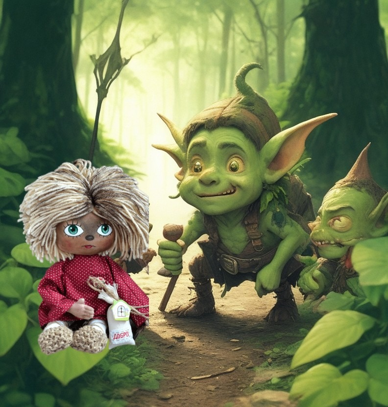
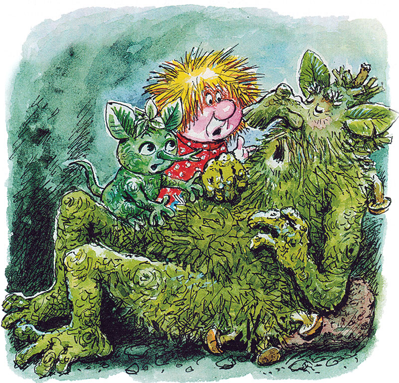
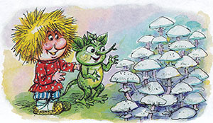
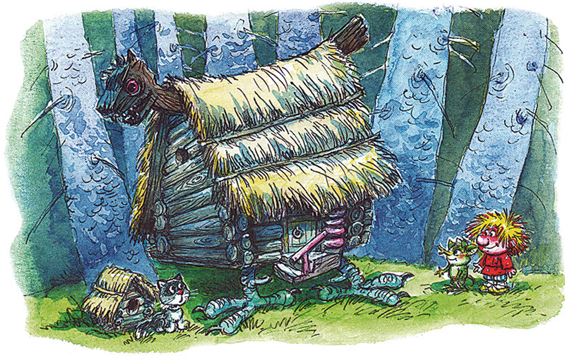
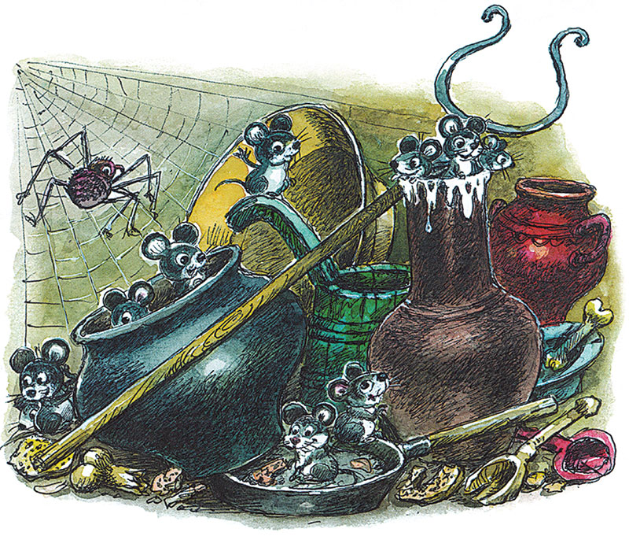
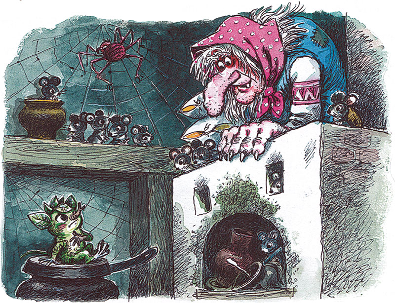

Домовёнок Кузя - продолжение -7.
Татьяна Александрова
17. Поганки на полянке
Маленький домовенок сидел на пне у лешачьей берлоги и во все горло распевал грустную старинную песню:
Соловей, как тебе не стошнилося
Во сыром бору петь, на ветке сидючи
Да на темный лес глядючи?
Правда, лес уже был куда светлей. Грустно было глядеть на этот растрепанный ветрами, лысый и голый лес. Но грустно и уходить отсюда, расставаться с друзьями. Лешие, оказывается, вовсе не злые, сердятся, только когда лес обижают. Разве деревья и кусты сами убегут от обидчика? Зверям со своего места куда деться? И птицы не улетят, возле гнезд останутся.
Леший в бору что хозяин в дому. Говорят, он нарочно водит прохожих, чтобы заблудились. Да ведь хороший хозяин любит, чтобы гости погостили у него подольше.
А еще грустнее, что лешие спят и спят, даже песня их не разбудила. Терпение у Кузьки кончилось. Влез в берлогу, принялся будить Лешика. Кричал ему прямо в ухо, дергал за хвост. Лешик спал. Тогда Кузька начал его щекотать. Лешик захихикал, открыл глаза:
— Что? Уже весна?
«Вот оно что! — подумал Кузька. — Лешие спят всю зиму. Как медведи, барсуки, ежи, как цветы и травы».
— Проснетесь весной, — плакал Кузька, — а я уж пропал с голоду да с холоду.
— Мы-то смотрим на тебя, вот соня. Каждую ночь спать ложится! Ну, думаем, уж на зиму заляжет так заляжет, — испуганно бормотал Лешик.
Оба принялись будить деда. Будили, будили, тот и не пошевелился, пень пнем.

Вышли наружу, стали разглядывать листок, на котором Кузькина деревня нарисована. Лешик потягивался, зевал, тер глаза. Никак не вспомнит, откуда ветер принес этот листок, в какую сторону им с Кузькой идти. Кузька тоже не запомнил, на деда понадеялся. А старый леший слишком крепко спит, до весны не проснется.
Вам, лешим, хорошо. — горевал домовенок. — Вы живете беспечно, а нам, домовым, без печки не прожить.
— Не плачь! — сообразил Лешик. — Есть в лесу печка. И не одна, а целых две. Во тьме и гнилушка светит! У Бабы Яги в нашем лесу два дома. Один похуже да поближе, другой получше да подальше. Не может она сразу в двух домах жить. Наверно, зимует там, где получше. А ты в другом перезимуешь, пока хозяйки нет. Сундучок у нас оставь. Яга, как сорока, все тащит, что блестит.
В чужом доме зимовать страшно, но интересно. Боялся Кузька леших, а они вон какие. Может, и Яга не хуже. Вдруг у нее и домовые есть? И Кузька побежал следом за Лешиком. Глубокий овраг, упадешь, все косточки пересчитаешь Один склон лесом порос, на другом — кусты и камни. Внизу — мутная речка. Через овраг кривое дерево перекинуто.
Не хотелось Кузьке ступать на этот мостик. Дерево дрожит, ноги дрожат. Сидеть бы посиживать дома, есть кашу с молоком или похлебочку. Оступился Кузька. Летит в реку лапоть с одной ноги, а другой застрял в ветвях кривого дерева, держит своего хозяина. Кузька вцепился в дерево обеими руками, повис над мутной речкой.
— А, вот ты где! Какие качели придумал! И я с тобой! Ух, здорово! — Лешик примостился рядом и давай раскачиваться так, что у Кузьки дух захватило от ужаса. — Ладно. Хорошенького понемножку. Бежим скорее!
— Я не могу бежать! — пискнул Кузька. Лапоть плыл, распустив завязки, как хвост, притормаживая у камней.
— Не можешь без лаптя? Тогда скачи на одной ножке!
Кузька ухватился за лапу друга, не успел оглянуться, как допрыгал до того берега. Лешик побежал спасать лапоть. И вот Кузька — один лапоть сухой, другой мокрый — бежит вверх по каменистому склону.
Совсем темно было бы в здешнем бору, кабы не белые поганки.
— Когда Яга в ступе летит домой, — шепнул Лешик, — то несется над этими поганками, чтоб мимо избы не пролететь.
На поляне, куда выскочили друзья, белым-бело от поганок.
— Ни одной поганки не сбито! — обрадовался Лешик. — Значит, бабушки Яги нету дома.

18. Кузька у Бабы-Яги. Дом для плохого настроения
Посреди поляны переступала с ноги на ногу избушка на курьих ножках, без окон, без трубы. У Кузьки в деревне были похожие избы, только не на курьих ножках. Там топили печки по-черному, дым выпускали через дверь и через узенькие оконца под крышей. У хозяев этаких домов глаза всегда были красные. И у домовых — тоже.
У избы Бабы Яги крыша надвинута чуть не до порога. Перед избой на привязи у собачьей конуры сидел тощий серый Кот. Кот — не собака, гостей пугать — не его забота.

Увидев Кузьку с Лешиком, он удалился в конуру и принялся мыть серой лапой серую мордочку — дело, достойное Кота.
— Избушка, избушка! — позвал Лешик. — Стань к лесу задом, к нам передом!
Избушка стоит как стояла. Вдруг из лесу, из-за оврага, прилетел Дятел (любимая птица деда Диадоха), застучал по крыше. Изба неохотно повернулась грязной трухлявой дверью. Друзья потянули за сучок, который был вместо ручки, вбежали внутрь. Дверь сзади так наподдала Кузьку, что он плюхнулся на пол, но не ушибся. Пол был мягкий от пыли.
— Сей же час подмету! — обрадовался домовенок. — Вот и метла!
— Ох, не мети! Улетишь ты на этой метле неведомо куда. Яга то в ступе летает, то верхом на этой метле! — испугался Лешик.
Ну и дом! Пыль, паутина по всем углам. На печи драные подушки, одеяла — заплатка на заплатке. А мышей видимо-невидимо.
— Вот бы сюда Кота! — сказал домовенок. Мыши запищали, сверкнули глазками. Кузька заглянул в печь — соскучился по жареному и пареному. Оттуда кто-то зашипел па него, вспыхнули два красных глаза. Угольки выпрыгнули из печи, чуть не прожгли Кузьке рубаху.
Чугуны, ухваты, горшки были такие грязные, закопченные, что Кузька понял: искать друзей-домовых в этом доме нечего. Ни один уважающий себя домовой такого безобразия не потерпит.

— Тут мыши вместо домовых, что ли? — сказал Кузька — Беда хозяевам, у кого они домовые. Уж я-то наведу здесь порядок!
— Что ты, Кузя! — испугался Лешик. — Баба Яга тебя за это съест. Тут у нее Дом для плохого настроения. Сердится она, когда нарушают ее порядки или беспорядки.
У-у-у! Лечу-у-у! — послышалось вдруг.
Дом заходил ходуном.
Ухваты упали.
Чугуны брякнули.
Мыши юркнули кто куда. Дверь настежь, и в избу влетела Баба Яга. Ступу к порогу, сама — на печь. Лешик едва успел спрягать Кузьку в большой чугун, накрыл сковородкой и сам уселся сверху.
— Незваные гости глодают кости, — ворчит Яга на Лешика. — А у меня и от гостей одни косточки остаются. Ну, чего пожаловал?
— Здравствуй, бабушка Яга! — поклонился Лешик, не слезая со сковородки.
— Непрошеный гость, а еще кланяется, вежливостью хвалится, — ворчит Баба Яга. — А сам на чугуне расселся. Лавок тебе мало? Еще и сковородку подложил. Для мягкости, что ли?
— Повидаться пришел, — говорит Лешик. — Ты ведь мне бабушка, хотя и троюродная. Летаешь высоко, смотришь далеко. Кругом бывала, много видала.
— Где была, там меня уже нету, — перебила Баба Яга. — Чего видала — не скажу.
— Я только в лесу бывал, деревья видал, — вздохнул Лешик — А не попадалась ли тебе маленькая деревенька над небольшой речкой?
— Смотри, сам не попадись мне на обед или на ужин! — ворчит Яга.
— Меня есть нельзя. За это тебе в лесу житья не будет, дедушка Диадох палкой наподдаст!
— Не бойся, не трону. Проку от тебя, от тощего комара. Не люблю я вас, леших, терплю только. В вашем лесу живу, куда деться?
— А домовых любишь? — спросил Лешик. — Маленьких домовят? Домовые ведь, как и ты, в дому живут.
— Неужто нет? — отвечает Баба Яга. — Еще как люблю! Толстенькие они, мяконькие, как ватрушки.
Кузька в чугуне испуганно потрогал себя и приуныл. Он был довольно упитанный.
— Бабушка Яга! — испугался Лешик. — Домовые — тоже твоя родня. Разве родных можно есть?
— Неужто нет? — говорит Баба Яга. — Поедом едят! Домовые мне кто? Седьмая вода на киселе. С киселем их и едят. — Яга свесилась с печи, в упор глядит на Лешика.

— Погоди-ка. Бегает тут по лесу один лохматенький, на ногах корзинки, на рубахе картинки. Так где он, говоришь?
Тихо стало в доме, только мухи жужжат. И надо же! Одна мышь лучше места не нашла, чем в чугуне, рядом с домовенком. Поначалу сидела смирно. А тут хвостом махнула, пыль подняла, ни вдохнуть, ни выдохнуть. Кузька терпел, терпел да так чихнул, что сковородка слетела с чугуна вместе с Лешиком.
Баба Яга как закричит страшным голосом:
— Кто в чугуне чихает?
И тут громко постучали в стену. Друзья вон из дома, не помнят, как и выскочили. Первый же встречный куст загородил их ветками, прикрыл последними листьями. Баба Яга кричит с порога:
«Улюлю! Догоню! Поймаю!» — принюхивается, озирается. Да разве сыщешь лешего в родном лесу! Одни поганки белеют на полянке да дятел стучит в стену дома.
Кузька одним глазком глянул на Ягу и то испугался. Серый Кот подошел к хозяйке то ли приласкаться, то ли показать, где прячутся непрошеные гости. Яга и на него рявкнула:
— Надоел хуже собаки! Зачем чужих из дому выпускаешь?
Кот угрюмо поплелся к конуре/А Яга уже кричит на Дятла:
— Чего избу долбишь? Кыш отсюда! Не видал, куда побежали?
— К деду Диадоху, на тебя жаловаться! — Дятел перелетел на сосну и застучал еще сильнее.
— Я ж их не съела! Чего попусту жаловаться? Съела бы. тогда и жалуйтесь кому хотите. Да пропади они пропадом! — Яга зевнула во весь огромный рот и ушла в избу. Вскоре по лесу разнесся ее могучий храп.
Лешик с Кузькой направились к мутной лесной речке. Когда они крались мимо конуры, Кот притворился спящим, а сам подумал: «Мышей бы я из дома не выпустил. Эх, переловил бы я их, кабы не цепь».
Продолжение следует